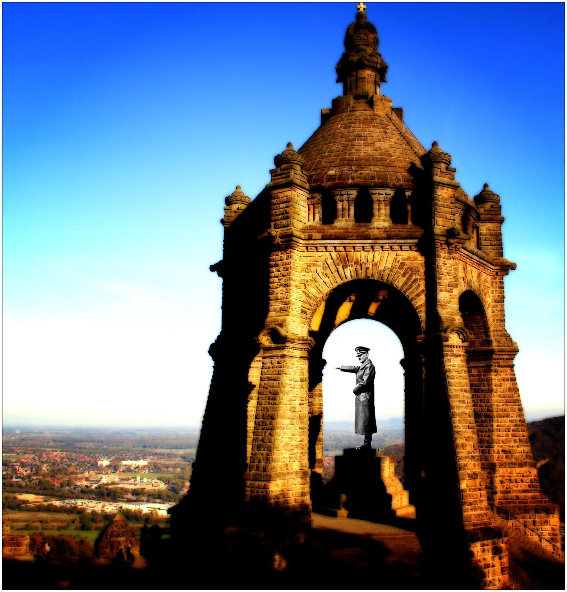

The Interrupted War
From Ober Ost to 1941 – and the monster they created themselves
Since 1896, Emperor William I has stood beneath a stone canopy at the Porta Westfalica, stretching his right hand out over the land. Put Hitler in his place, as he took the victory parade in Warsaw on 5 October 1939, and he fits. Nothing has to be retouched. We follow the line this picture shows.

I. The picture
The Province of Westphalia built the monument between 1892 and 1896. The architect was Bruno Schmitz, the statue is by Kaspar von Zumbusch. It was inaugurated on 18 October 1896. William I stands in a cloak beneath an arch; above him, on the dome, sits the imperial crown with its cross.
The figure in the montage comes from a photograph in the German Federal Archives. It shows Hitler on the reviewing stand in Warsaw after the conquest of Poland. The long coat, the outstretched arm, the other hand on the belt: the pose fills the space the canopy was built for the emperor.
The picture does not claim that William I was Hitler. It shows something else: the pedestal was ready.
II. Ober Ost
In November 1914, Paul von Hindenburg and his chief of staff Erich Ludendorff took command of all German forces in the East. After the victories of 1915 they ruled an occupied territory of almost 110,000 square kilometres with about three million people: Courland, Lithuania and the Białystok–Grodno area. It was named after its commander-in-chief, “Ober Ost” for short. There was no civilian administration. Historians therefore speak of the “military state of Ober Ost”, run from headquarters in Kaunas.
Ludendorff wanted, as Liulevicius quotes him, to “create something whole” there. The American historian Vejas Gabriel Liulevicius studied this military state in his book “War Land on the Eastern Front”. He describes an administration that wanted to register and steer everything: roads, goods, passes, harvests, people. Liulevicius calls it “Verkehrspolitik”, a politics of total movement control. District borders were drawn without regard for the peoples who lived there. Grain and livestock were requisitioned, locals were conscripted for forced labour. After the war, soldiers were to be settled there as a “human wall” in the East.
More important than the administration was what the soldiers took home with them. They saw swamps, wooden houses, bad roads and many languages. They took it for disorder that needed German order. Liulevicius describes how the view of “land and people” (Land und Leute) turned into a view of “space and Volk” (Raum und Volk). A country where people live became a space that can be ordered, emptied and filled.
Fairness requires this: Ober Ost was not a regime of annihilation. The military administration set up schools and newspapers in the local languages and held on to an educational mission, however condescending. Liulevicius stresses this difference from the later occupation, too.
III. The train and the money
In April 1917 Lenin travelled with about thirty companions from Switzerland across Germany to Sweden and on to Petrograd. The Supreme Army Command under Hindenburg and Ludendorff had approved the transit. They were the same men who ruled Ober Ost. The aim was simple: Russia was to leave the war so that troops would be freed for the West.
It did not stop at the ticket. The files of the German Foreign Office, published by Zbyněk Zeman in 1958, document continuous funding. The money went through Stockholm, through the Bolshevik Jakub Fürstenberg-Hanecki and the Social Democrat Alexander Helphand, known as Parvus. On 29 September 1917 State Secretary Richard von Kühlmann wrote that the Bolshevik movement could never have reached its scale and influence without “our continual support”. On 3 December 1917 he reported to the Kaiser that only German funds had allowed the Bolsheviks to build up Pravda and broaden their narrow base.
How much money flowed is disputed, and a large part came only after the coup. The so-called Sisson documents, which supposedly prove payments from the Reichsbank to Lenin, are forgeries. And Lenin did not come to power through German money alone. War-weariness, the failures of the Kerensky government and the failed Kornilov putsch were part of it. But Berlin made Lenin possible and made him strong.
IV. Victory in the East
On 3 March 1918 Soviet Russia signed the peace of Brest-Litovsk. Russia gave up Poland, the Baltic, Finland and Ukraine. According to the German Historical Museum, this would have cost it almost a third of its population and more than half of its industry. In February Germany had already concluded the “bread peace” with Ukraine, which was to bring grain to the starving Reich. In August a supplementary treaty added six billion gold marks in reparations.
In the East, Germany had won in 1918. German troops stood in Kyiv, in Crimea and on the Don. The war was lost in the autumn, in the West. The armistice and then Versailles annulled Brest-Litovsk.
For many officers the East was therefore never lost. It had been taken from them, by the home front, by the revolution, by the West. The stab-in-the-back legend fed on this. A war that one believes was won in the field and lost at the negotiating table is not over for the losers. It is interrupted.
V. The war after the war
How interrupted it was showed at once. The armistice obliged German troops to stay in the Baltic until the Allies saw fit to withdraw them. They were to hold back the Red Army. Remnants of the army became Freikorps. The “Iron Division” numbered up to 16,000 men at times. From February 1919 General Rüdiger von der Goltz commanded all German troops in the region. In May 1919 they took Riga.
Then von der Goltz turned not east against the Red Army, as the Allies expected, but north against Estonians and Latvians. In June 1919 he was beaten at Cēsis, in German Wenden.
Many volunteers had come with a false hope. An agreement with the Latvian government of December 1918 gave foreign volunteers the right to apply for citizenship after four weeks of service. Citizenship was required to acquire land. There was no promise of settlement land. Recruiting offices in Germany advertised it anyway, often as if the land were free. The historian Mathias Voigtmann calls the Baltic in 1919 a “school of violence”.
VI. The same men
On 9 November 1923 Ludendorff marched beside Hitler to the Feldherrnhalle in Munich. On 30 January 1933 Hindenburg, by then Reich President, appointed Hitler chancellor. Franz von Papen, who had arranged the appointment, brushed aside the concerns of the conservative Ewald von Kleist-Schmenzin: “What do you want? I have Hindenburg’s confidence. In two months we will have pushed Hitler so far into a corner that he squeaks.” That is how Kleist-Schmenzin recorded it; the text appeared only in 1959, after his execution.
The generals who led the attack on the Soviet Union in 1941, Fedor von Bock, Franz Halder, Erich von Manstein and others, had already been officers in the First World War. Hitler himself had served in the West, not in the East. His eastward gaze came from ideology. In “Mein Kampf” he wrote that the Germans would “stop the endless German movement to the south and west of Europe, and turn our gaze toward the land in the East”. The military brought something else: the memory of a space it had ruled once before.
The names came back, too. After the invasion of Poland, the German commander there was once again called “Oberbefehlshaber Ost”. In 1941 the regime created the “Reichskommissariat Ostland”: the Baltic states and parts of Belarus, at its core the old territory of Ober Ost.
VII. What was new
Here one has to be precise. Johannes Blaskowitz, Oberbefehlshaber Ost from October 1939, protested in memoranda in the winter of 1939/40 against the SS murders in Poland. In May 1940 he was removed. So the old officer corps still had limits. The regime swept them aside, and most generals complied.
The war of 1941 was a war of annihilation, and that was new. The Commissar Order directed that captured political officers of the Red Army be shot. In May 1941 state secretaries recorded at a meeting that “umpteen millions of people will undoubtedly starve” if the Wehrmacht fed itself off the land. Behind the front, the Einsatzgruppen murdered. Of about 5.7 million Soviet prisoners of war, some three million died.
The root in military culture was older. The historian Isabel Hull has shown, using the war against the Herero in 1904, how the imperial army tended to destroy an enemy completely once he would not submit. A fair summary: the space, the men and the gaze were the same. The radicalism was new. In 1941 the Wehrmacht resumed an interrupted war and turned it into something that had not existed before.
VIII. The self-made monster
Hindenburg and Ludendorff sent Lenin to Russia to weaken the Tsarist empire. They got the peace of Brest-Litovsk, and they got the Soviet Union. In the 1920s the Reichswehr trained secretly on Soviet soil: pilots at Lipetsk, tanks near Kazan. That way it got around the limits of Versailles, and the Red Army learned alongside. In May 1945 this army stood in Berlin.
Papen and Hindenburg brought in Hitler to use him. He used them. The Western powers contributed with Versailles and with appeasement up to Munich in 1938. But the monster was created by the German elites who thought they had it on a leash.
IX. The pattern
This is not peculiar to Germany. In “He Is a Son of a Bitch, but He’s Our Son of a Bitch” we described the same pattern for the United States: from the overthrow of Mossadegh in 1953 to the revolution of 1979 and on to the mujahideen from whom the Taliban emerged. “The Discarded Key” dealt with the German-Russian side of the story.
The mechanism is always the same, and every control engineer knows it. An empire solves today’s problem with a means whose side effect appears only years later. A control loop with a long dead time starts to oscillate: when the feedback arrives, other people are in office. The connection can no longer be seen, and nobody is held liable. Whoever sends Lenin to close one front opens another. That is our conclusion from these cases, not a law of nature. It holds as long as decision-makers do not have to answer for the long-term consequences. In “Who Builds the Arena” we described the same gap in artificial intelligence.
X. The pedestal
The monument still stands, and it is a lovely place for an outing. We do not claim that history repeats itself. We only say what the picture shows. A man alone does not fill a space. He needs a pedestal, a canopy, a crown above, an army that remembers a won East, and elites who believe they have him in hand.
Hitler did not have to be retouched into the pose. The pedestal was already there.
Further reading: He Is a Son of a Bitch, but He’s Our Son of a Bitch · The Discarded Key · Who Builds the Arena